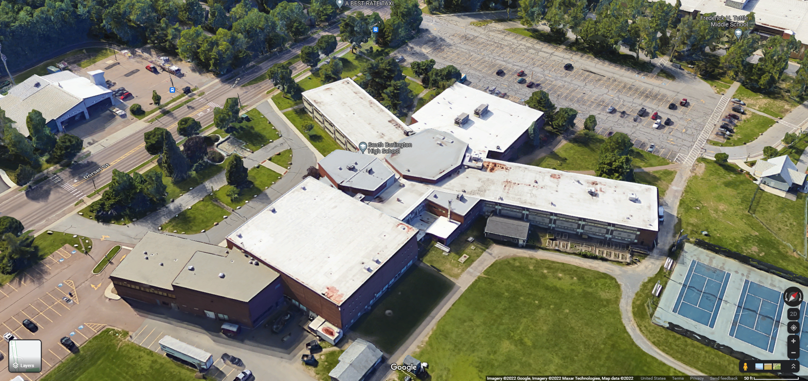
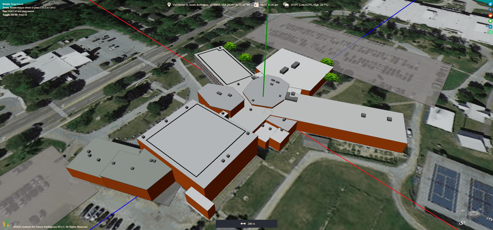
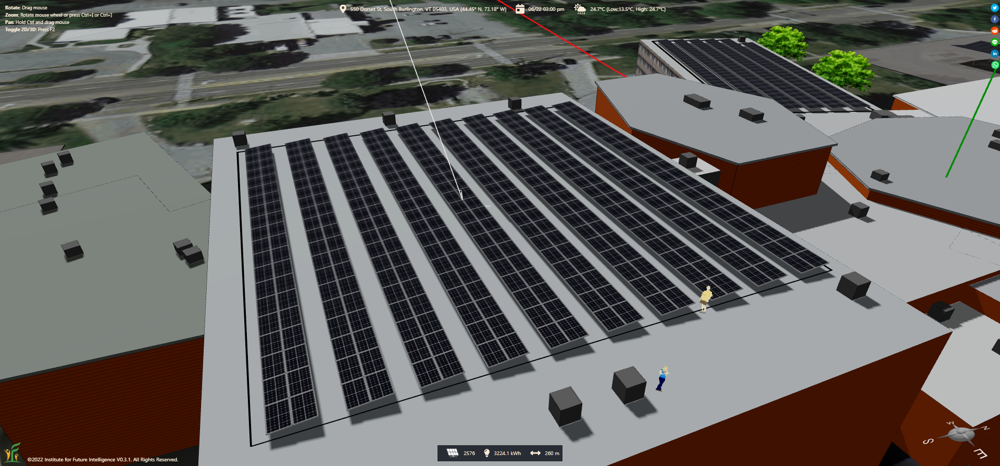
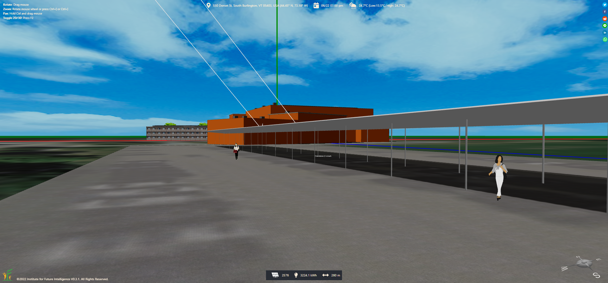
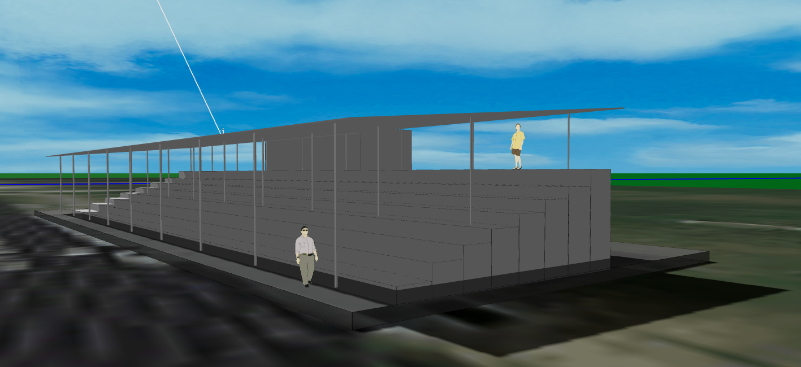
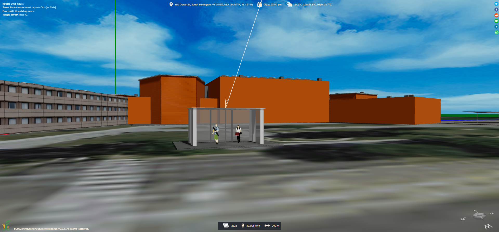
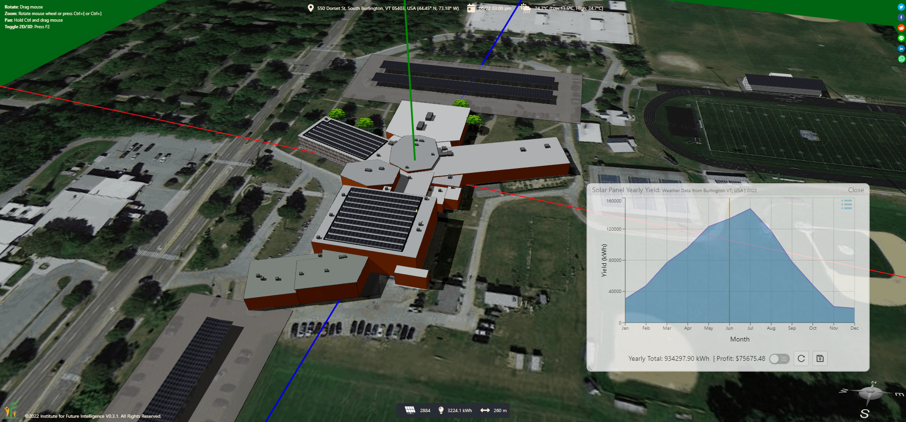
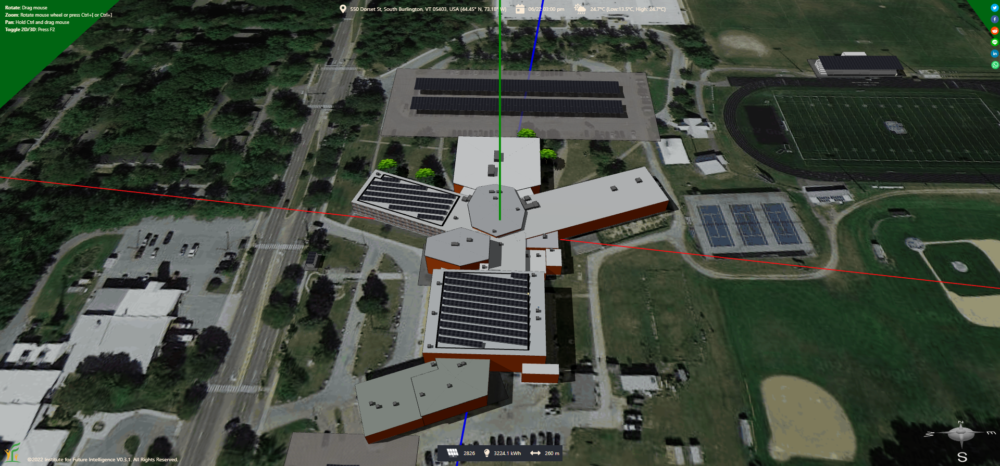
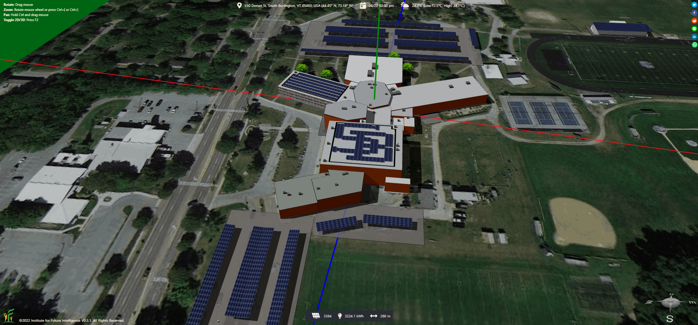

Solarize Your School
By Charles Xie ✉
Listen to a podcast about this article
One of the goals of the Inflation Reduction Act that President Biden signed into law on August 16, 2022 is to build a clean energy economy. Specifically, the Act aims to power homes, businesses, and communities with much more clean energy by 2030, including 950 million solar panels, 120,000 wind turbines, and 2,300 grid-scale battery plants.
But where do we install nearly one billion additional solar panels in the next eight years without disrupting the vulnerable ecosystem? If you are a teacher or a student interested in this question, look no further! While more than 7,000 schools in the United States have installed solar panels on campus, over 90% of schools around the country still haven't adopted solar energy, according to a 2020 study by the Interstate Renewable Energy Council (IREC). So why don't we just start with schools? If we can engage students in the planning of their schools' transition to green energy and ignite their interest in building a sustainable world, we can also cultivate a strong and motivated workforce to accelerate the transition of the whole society to renewable energy.
Our Aladdin CAD software has been designed to accomplish exactly that mission. It is an easy-to-use Web-based tool that empowers students to design almost any solar solution for almost any place in the world. The software includes weather data from more than 800 locations worldwide and its prediction accuracy is verified to be comparable to professional tools used in the solar industry. This article shows you how Aladdin can be used to design a blueprint for your school to go solar — if it hasn't.
Modeling a school building in Aladdin
The first step is to sketch a 3D model of your school's buildings. To make it easier, you can use the Map Tool to get a satellite image of your school to show up on the ground in the 3D scene of Aladdin. When a satellite image is present, all the foundations (containers of components) in Aladdin become translucent for you to see through. Then, you can just draw building components on top of the image. The following screenshots show a finished model of South Burlington High School in Vermont, in comparison with a 3D view from Google Maps.


Comparison of a Google Maps 3D image (left) and an Aladdin model (right) of South Burlington High School in Vermont
Adding rooftop solar panels
Once we have a 3D model of the school's buildings, we can start to add solar panels to the roofs. You can use the Polygon Tool to draw an area on a roof in which rows of solar panels will be mounted and then use the Layout Wizard to generate an array with chosen values for the type of solar panels, the inter-row spacing, the tilt angle, and so on.

A rooftop solar panel array
Adding solar canopies to parking lots
Another place to add solar panels is the parking lots. This kind of solution is called solar canopies (a smaller canopy for a few cars is often called a solar carport, which is more commonly associated with residential buildings). Wouldn't it be nice if your electric vehicles can be charged by the sun when they are parked during the day?

A solar canopy over a parking lot
Adding solar canopies to bleachers and bus stops
There may be other places on campus where solar panels can be used. Use your imagination to come up with some creative applications. For example, solar canopies can be installed above football field bleachers or bus stops to provide sun shading, rain shelters, and charging stations.

A solar canopy over the bleachers of a football field

A solar canopy over a bus stop
Analyzing the complete solution
In the above sections, we show you three different places to install solar panels on a typical campus. Let's put them together to have a whole-campus solution. This design consists of two rooftop solar arrays and multiple solar canopies that have 2,884 solar panels in total. We can then run a simulation to analyze how much electricity these solar panels can generate. The result is that they can generate more than 930 MWh in a year (enough to power approximately 90 families).

A solution with both rooftop and canopy solar panels
Click HERE to view and edit the above model
Multiple solutions
Engineering design has no single "correct" solution. Challenging students to generate a variety of designs can engage them to embrace different ideas and think about the problems from different perspectives. In the following, we show two different designs.

A design that has south-facing rooftop solar panels
Click HERE to view and edit the above model

A design that features rooftop solar panels arranged in the form of the school's logo
Click HERE to view and edit the above model
Conclusion
More and more nations and regions in the world are planning to switch their power supplies to 100% renewable resources by midcentury.
Since the world also belongs to the young, we are obliged to find a way to engage them in quest for a sustainable future.
Motivating youth is so vital in Bill Gates’s call for an “energy miracle” that
he urged high school students to join the energy revolution.
But, apart from becoming a conscientious user of energy, how can students make meaningful contributions?
This article shows a possibility for students to get involved using our Aladdin software.